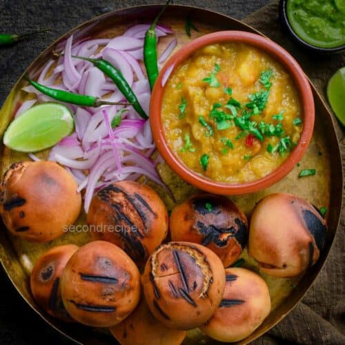

Back
Litti-Chokha

Info
Litti Chokha is a traditional dish from Bihar and parts of eastern Uttar Pradesh in India. It’s a rustic and
flavorful meal that consists of Litti (wheat flour balls stuffed with spiced sattu) and Chokha (a mashed
vegetable
preparation, typically made with roasted eggplant, tomato, and potato).
🌾 LITTI RECIPE
Ingredients:
For Dough:
- Whole wheat flour - 2 cups
- Ajwain (carom seeds) - ½ tsp
- Salt - to taste
- Ghee or oil - 2 tbsp (for moyan / shortening)
- Water - as needed (to knead)
For Sattu Stuffing:
- Sattu (roasted gram flour) 1 cup
- Finely chopped onion - 1
- Finely chopped green chili - 1-2
- Grated garlic - 1 tsp
- Grated ginger - 1 tsp
- Lemon juice - 1 tbsp (or dry mango powder - ½ tsp)
- Mustard oil - 1-2 tbsp
- Chopped coriander leaves - 1 tbsp
- Pickle masala - 1 tsp (optional, for flavor)
- Salt - to taste
- Water - a few drops to bind
How to Make Litti:
- Prepare Dough:
- Mix wheat flour, ajwain, salt, and ghee/oil.
- Gradually add water and knead into a soft dough. Cover and rest for 20 minutes.
- Prepare Filling:
- Mix all stuffing ingredients. The mix should be crumbly but able to hold shape when pressed.
- Shape Litti:
- Divide dough into balls.
- Flatten each and place 1-2 tsp of filling in the center.
- Bring the edges together and seal to make a stuffed ball.
- Cook Litti:
- Traditionally: Roast over a charcoal fire or cow dung cake for smoky flavor.
- Oven method: Preheat oven to 200°C (392°F), bake for 30-35 minutes, flipping in between.
- Tawa method: Roast on a heavy tawa on low flame, turning occasionally until evenly cooked.
- Final touch:
- Dip hot littis in melted ghee or brush generously before serving.
🍆 CHOKHA RECIPE
Ingredients:
For Baingan (Eggplant) Chokha:
- Large eggplant (baingan) - 1
- Tomatoes - 2
- Boiled potatoes - 1-2 (optional, for richness)
- Chopped onion - 1
- Chopped green chili - 1-2
- Grated garlic - 1 tsp
- Mustard oil - 1 tbsp
-
Lemon juice - 1 tbsp
- Chopped coriander - 1 tbsp
- Salt - to taste
How to Make Chokha:
-
Roast the Veggies:
-
Roast eggplant and tomatoes over open flame or in oven until skin is charred and pulp is soft.
-
Cool, peel off skin, and mash.
-
Mix It Up:
-
Combine mashed veggies with chopped onion, green chili, garlic, coriander, salt, mustard oil, and lemon juice.
- Optional:
-
Add mashed boiled potato for added body and flavor.
🥘 To Serve:
Place 2-3 hot Littis on a plate, pour some ghee over them, and serve with generous helping of Chokha. You can also add green chutney or pickles on the side.
ENJOY!